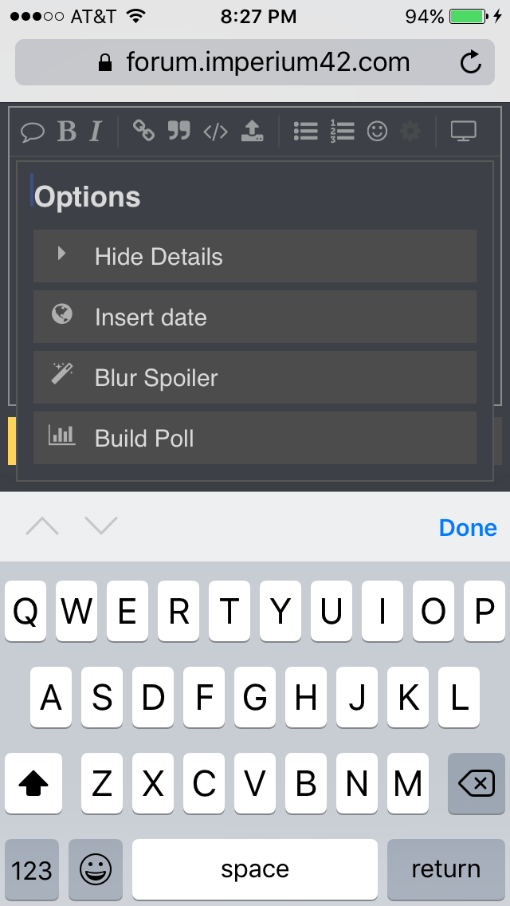

I am just gonna can this. I had good goals in mind but it seems like based on the amount of animosity no one wants it so I need to restructure this to make it smaller or a new setup altogether. I wanted this to work but if the reaction is this bad I don’t think I should reroll this tbh. So if there is enough interest as is I will reroll it. If not I will can it.
I just have to figure out how to do a poll.
I’m fairly certain that the potential ‘mic’ problem would be circumvented by players.
- Reroll
- Can
0 voters

Okay then, let’s try it.
- Reroll the game, I would join
- Reroll the game, I wouldn’t join
- Can it and do a smaller game for newbies I would join
- Can it and don’t bother with newbie games.
0 voters
Needs a night phase and kill to be fair IMO
wait but why
what did i miss
No it doesn’t lol
1 Like
This setup generally works without that.
Mod influence made game unfair for scum so I had to can.
Though can we have a 12 hour night phase for a “rest”
as the main person (only person before this game) who hosts newbie setups
It’s not worth the effort
If new people are looking to get into it, they’ll just join a normal fol setup first probably
Scum need 5 mislynches to win, thats 2 more than required.
What did they do?
Well reroll then tons of people complained and said they won’t rejoin
So likely can
But it’s flipless
1 Like
Reinforced scum feelings of we suck and reminded people there were no trials thus hampering scum immensely
This setting has been run literally for years before I brought it over